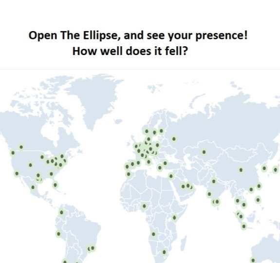
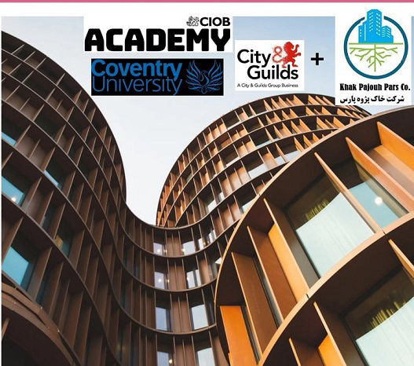

Training for Organisations
We can also offer the vast majority of workshops online, perfect if the majority of your team are working remotely. If you'd like to discuss how we can meet your training needs in the ever changing circumstances then get in touch below.

A Utopian Vision
Emergence of a utopian vision
Utopian visions portray the general characteristics of an ideal society, and often emerge from distaste for the status quo. Many leading minds throughout the history of human thought have touched on the ideal state of society.
Utopian visions are sometimes characterized as “reality transcending” (Kumar, 1987, 1991).
Cooperative Online Training & Working
Online Anytime Courses
Utilising the latest interactive online technology, we've developed brand new short courses that can be completed on the go using your phone or tablet, all at a time that suits you.
The courses also automatically track your progress, enabling you to pick up where you left off with ease.

Lifelong & Lifewide Learning Style
development after formal education
Lifewide learning adds value to lifelong learning by recognising that most people, no matter what their age or circumstances, simultaneously inhabit a number of different spaces – like work or education, running a home, being a member of a family and or caring for others, being involved in a club or society, travelling ...